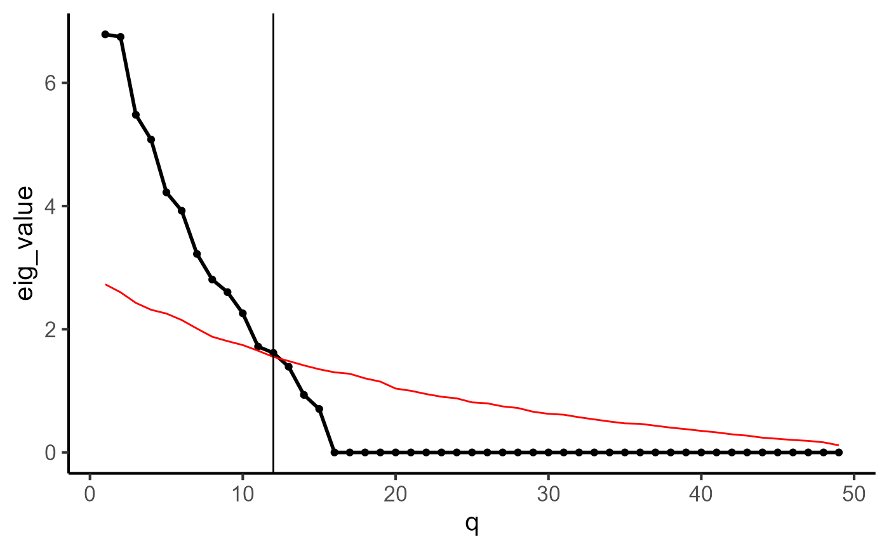

This function estimate the dimension of low dimensional embedding for a given cell by gene expression matrix. For more details, see Franklin et al. (1995) and Crawford et al. (2010).
diagnostic.cor.eigs(object, ...)
# S3 method for default
diagnostic.cor.eigs(
object,
q_max = 50,
dir_name = "diagnostic_PCs",
plot = TRUE,
save_eigen = TRUE,
n.sims = 10,
parallel = TRUE,
ncores = 10,
seed = 1
)
# S3 method for Seurat
diagnostic.cor.eigs(
object,
assay = NULL,
slot = "data",
nfeatures = 2000,
q_max = 50,
seed = 1,
...
)a Seurat object.
Other arguments passed to diagnostic.cor.eigs.default.
an optional integer, the upper bound of low dimensional embedding. Default is 50.
a folder to store the results when necessary.
a indicator of whether plot eigen values.
a indicator of whether save eigen values.
number of simulaton times. Default is 10.
a indicator of whether use parallel analysis.
the number of cores used in parallel analysis. Default is 10.
an optional integer, the random seed used. Default is 1.
an optional string, specify the name of assay in the Seurat object to be used.
an optional string, specify the name of slot.
an optional integer, specify the number of features to select as top variable features. Default is 2000.
A data.frame with attribute q_est, which is the estimated dimension of low dimensional embedding. In addition, this data.frame containing the following components:
q - The index of eigen values.
eig_value - The eigen values on observed data.
eig_sim - The mean value of eigen values of n.sims simulated data.
1. Franklin, S. B., Gibson, D. J., Robertson, P. A., Pohlmann, J. T., & Fralish, J. S. (1995). Parallel analysis: a method for determining significant principal components. Journal of Vegetation Science, 6(1), 99-106.
2. Crawford, A. V., Green, S. B., Levy, R., Lo, W. J., Scott, L., Svetina, D., & Thompson, M. S. (2010). Evaluation of parallel analysis methods for determining the number of factors.Educational and Psychological Measurement, 70(6), 885-901.
n <- 100
p <- 50
d <- 15
object <- matrix(rnorm(n*d), n, d) %*% matrix(rnorm(d*p), d, p)
diagnostic.cor.eigs(object, n.sims=2)
#> Warning: q_max is not less than the number of columns of X. Set it as ncol(X) - 1
#> Warning: You're computing too large a percentage of total singular values, use a standard svd instead.
#> Warning: You're computing too large a percentage of total singular values, use a standard svd instead.
#> Warning: did not converge--results might be invalid!; try increasing work or maxit
#> Warning: You're computing too large a percentage of total singular values, use a standard svd instead.
#> Warning: did not converge--results might be invalid!; try increasing work or maxit

#> q eig_value eig_sim
#> 1 1 8.641300e+00 2.7296224
#> 2 2 6.529225e+00 2.5998668
#> 3 3 5.735470e+00 2.4281943
#> 4 4 5.442624e+00 2.3160924
#> 5 5 4.094050e+00 2.2546295
#> 6 6 3.627821e+00 2.1499993
#> 7 7 3.155222e+00 2.0107977
#> 8 8 2.576820e+00 1.8784125
#> 9 9 2.151505e+00 1.8070276
#> 10 10 2.075659e+00 1.7429637
#> 11 11 1.459998e+00 1.6508146
#> 12 12 1.351199e+00 1.5513549
#> 13 13 1.227485e+00 1.4839385
#> 14 14 8.604620e-01 1.4132661
#> 15 15 5.711596e-01 1.3504219
#> 16 16 1.312390e-31 1.3008385
#> 17 17 4.250952e-32 1.2770930
#> 18 18 4.250952e-32 1.2028010
#> 19 19 4.250952e-32 1.1495144
#> 20 20 4.250952e-32 1.0373263
#> 21 21 4.250952e-32 1.0007974
#> 22 22 4.250952e-32 0.9480358
#> 23 23 4.250952e-32 0.9042866
#> 24 24 4.250952e-32 0.8777858
#> 25 25 4.250952e-32 0.8126820
#> 26 26 4.250952e-32 0.7971829
#> 27 27 4.250952e-32 0.7473634
#> 28 28 4.250952e-32 0.7215422
#> 29 29 4.250952e-32 0.6603520
#> 30 30 4.250952e-32 0.6266713
#> 31 31 4.250952e-32 0.6127033
#> 32 32 4.250952e-32 0.5712889
#> 33 33 4.250952e-32 0.5361208
#> 34 34 4.250952e-32 0.5017992
#> 35 35 4.250952e-32 0.4719108
#> 36 36 4.250952e-32 0.4645224
#> 37 37 4.250952e-32 0.4337665
#> 38 38 4.250952e-32 0.4024438
#> 39 39 4.250952e-32 0.3778852
#> 40 40 4.250952e-32 0.3498087
#> 41 41 4.250952e-32 0.3256078
#> 42 42 4.250952e-32 0.2940739
#> 43 43 4.250952e-32 0.2729165
#> 44 44 4.250952e-32 0.2395894
#> 45 45 4.250952e-32 0.2213664
#> 46 46 4.250952e-32 0.2017337
#> 47 47 4.250952e-32 0.1878001
#> 48 48 4.250952e-32 0.1639835
#> 49 49 4.250952e-32 0.1154468
data(pbmc3k_subset)
diagnostic.cor.eigs(pbmc3k_subset)
#> q eig_value eig_sim
#> 1 1 23.929052 1.908256
#> 2 2 18.102733 1.882371
#> 3 3 12.722405 1.869255
#> 4 4 7.003016 1.851465
#> 5 5 5.191374 1.838213
#> 6 6 4.522637 1.827703
#> 7 7 4.405147 1.814163
#> 8 8 4.228795 1.803438
#> 9 9 3.755574 1.794786
#> 10 10 3.024914 1.782824
#> 11 11 2.762026 1.774957
#> 12 12 2.563163 1.765330
#> 13 13 2.356058 1.755897
#> 14 14 2.327805 1.748090
#> 15 15 2.234705 1.739770
#> 16 16 2.177425 1.733552
#> 17 17 2.124344 1.725830
#> 18 18 2.091101 1.717673
#> 19 19 1.916809 1.710322
#> 20 20 1.876732 1.701207
#> 21 21 1.863351 1.694217
#> 22 22 1.803861 1.686974
#> 23 23 1.799787 1.679217
#> 24 24 1.785953 1.671952
#> 25 25 1.744159 1.666514
#> 26 26 1.721653 1.660902
#> 27 27 1.672803 1.653246
#> 28 28 1.665053 1.646059
#> 29 29 1.635223 1.640359
#> 30 30 1.631512 1.633545
#> 31 31 1.616833 1.625061
#> 32 32 1.608188 1.620094
#> 33 33 1.598857 1.613781
#> 34 34 1.586320 1.607866
#> 35 35 1.579568 1.602288
#> 36 36 1.568984 1.597075
#> 37 37 1.565915 1.590856
#> 38 38 1.547888 1.584051
#> 39 39 1.537458 1.578074
#> 40 40 1.516041 1.572593
#> 41 41 1.514160 1.566078
#> 42 42 1.501190 1.561421
#> 43 43 1.488496 1.556740
#> 44 44 1.474376 1.550787
#> 45 45 1.463595 1.542851
#> 46 46 1.455426 1.537156
#> 47 47 1.445370 1.532127
#> 48 48 1.439524 1.526544
#> 49 49 1.422735 1.522534
#> 50 50 1.419602 1.517190